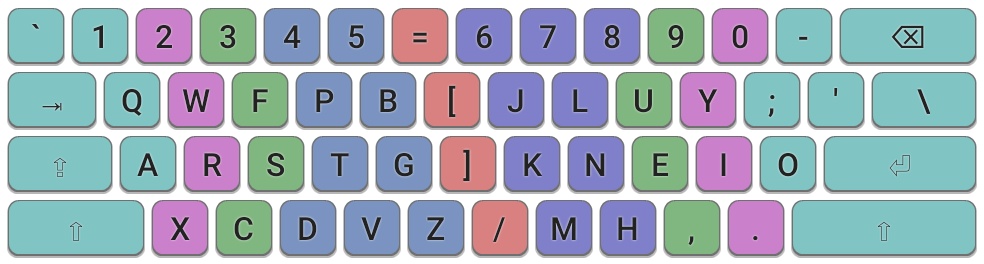
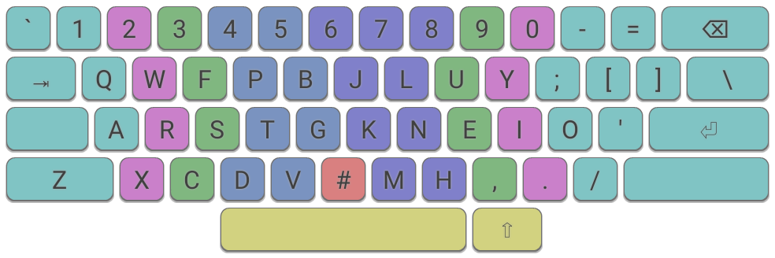
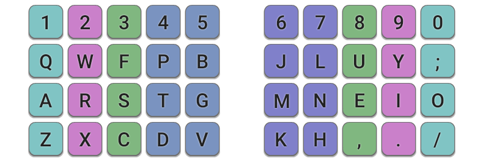

Colemak Mod-DH
A Colemak mod for more comfortable typing.
(rev 2)
Implementation on Keyboard Types
Colemak Mod-DH works best on keyboards which have good support for the Angle Mod i.e. ISO keyboards, and symmetric ergonomic keyboards. It can also be applied successfully to ANSI keyboards with an adjustment.
There are some example layout files in the Downloads section:
- Windows: files for use with Microsoft Keyboard Layout Creator and AutoHotKey.
- Linux: files for use with xmodmap and console.
- Mac: layout files for OSX.
Mod-DH is also supported in DreymaR's Big Bag of Keyboard Tricks.
ISO Keyboards

ISO standard: Colemak-DH for an ISO keyboard. Some of the punctuation keys may vary, depending on your region.

ISO wide: Colemak-DH for an ISO keyboard, in a "wide" configuration. This introduces a greater separation between the hands for a more ergonomic experience. See the Colemak Forum for more details on Wide mods.
ANSI Keyboards

ANSI standard: Colemak-DH for an ANSI keyboard. Due to the lack of an extra key to the right of the Left-Shift key, we need to relocate Z, and so here is the suggested placement. Fortunately Z is a rare key so it shouldn't have too adverse an effect!

ANSI wide: Colemak-DH for an ANSI keyboard, in a "wide" configuration. Like the ISO-wide variant, it introduces greater hand separation and allows easier access to Right-Shift and Return.

ANSI "shift-Z": Colemak-DH for an ANSI keyboard using Left-Shift for Z. Here, one of the Alt keys may be redefined to act as an extra Shift key, accessed via the thumb. This is arguably a superior position than the standard shift key. For more information see this page on optimizing modifier keys.
Matrix/Ergonomic Keyboards

Matrix "DH": Colemak-DH for an idealized, non-staggered keyboard.

Matrix "DHm": Colemak-DHm for a non-staggered keyboard. Due to the geometry of this type of keyboard, you may prefer to switch the M and K keys as per the original Mod-DH (rev 1) release.